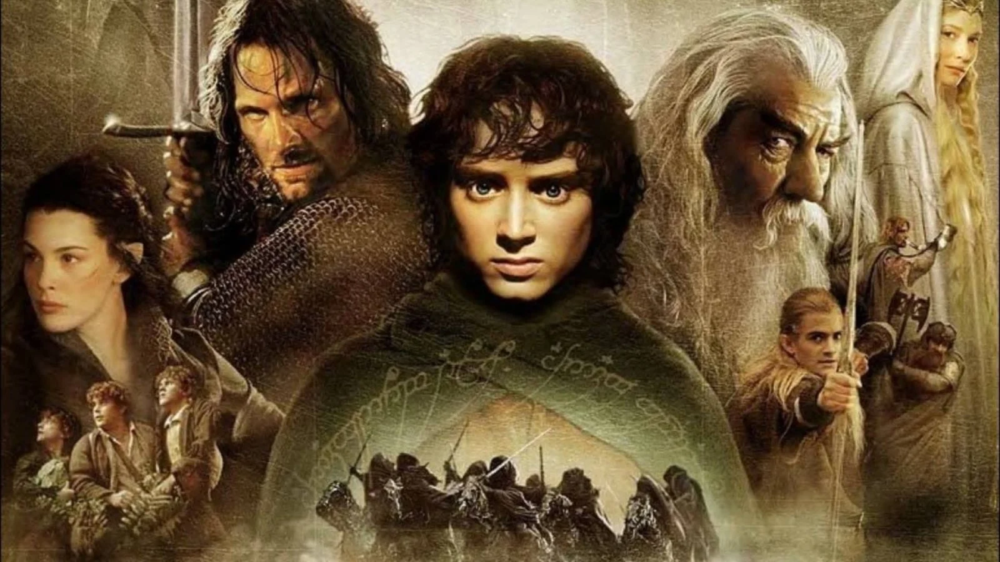
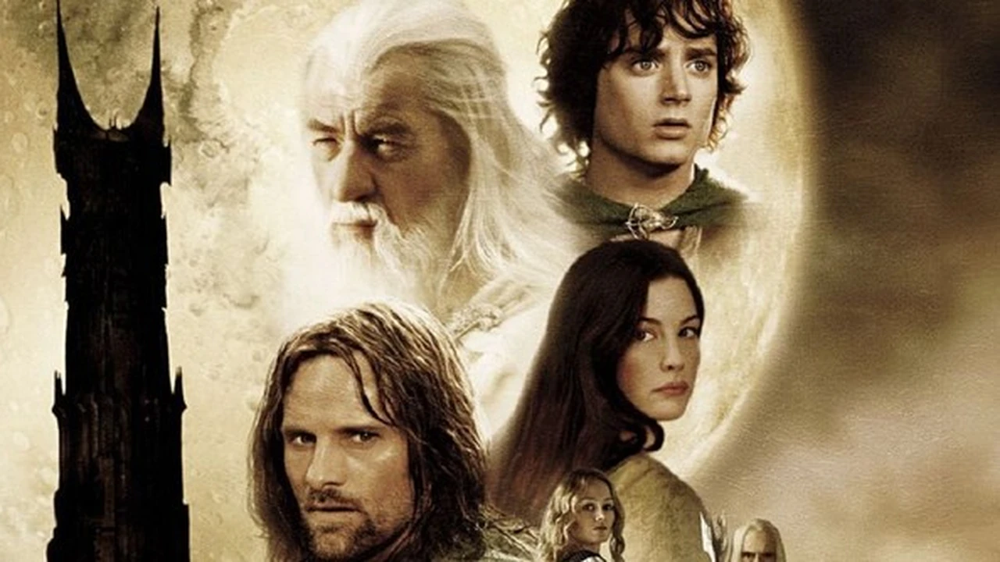
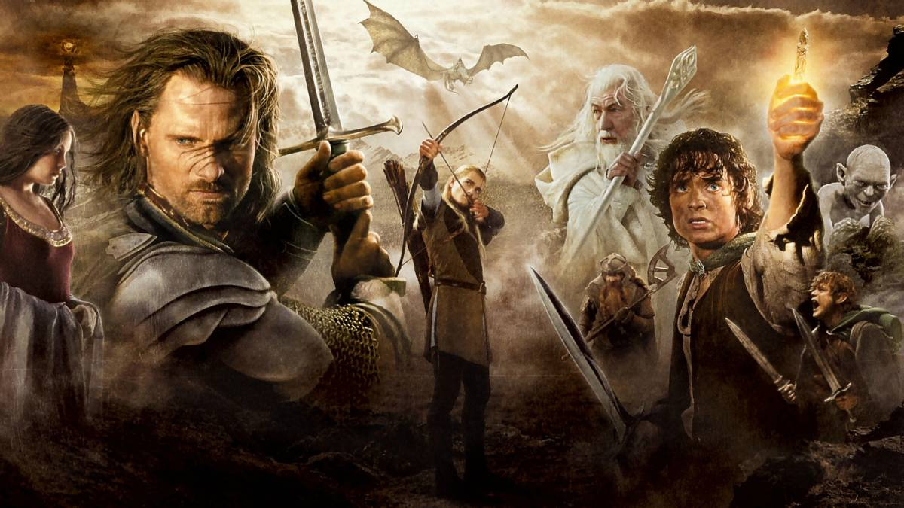

Il Signore degli Anelli
Il Signore degli Anelli (The Lord of the Rings) è una trilogia colossal fantasy co-sceneggiata, diretta e co-prodotta dal regista neozelandese Peter Jackson, basata sull'omonimo romanzo scritto da J. R. R. Tolkien. Considerato uno dei progetti più grandi e ambiziosi mai intrapresi nella storia del cinema, ha richiesto un budget complessivo di 281 milioni di dollari e otto anni di lavoro per essere realizzato. Ambientati nel mondo immaginario della Terra di Mezzo, i tre film seguono l'avventura degli hobbit Frodo Baggins (Elijah Wood) e Samvise Gamgee (Sean Astin) impegnati in una difficile missione per distruggere l'Unico Anello e quindi garantire l'annientamento del suo creatore, l'Oscuro Signore Sauron. I due piccoli hobbit saranno accompagnati a Mordor, fino al Monte Fato, dove dovrà essere distrutto l'Anello, dalla creatura Gollum, un tempo portatrice dell'Unico Anello. Nel frattempo Aragorn, l'erede in esilio al trono di Gondor, lo stregone Gandalf, l'elfo Legolas e il nano Gimli dovranno unire e mobilitare i popoli liberi della Terra di mezzo nella guerra contro gli eserciti di Sauron.
-

La Compagnia dell'Anello
La Compagnia dell'Anello", Frodo Baggins, un Hobbit della Contea, eredita un misterioso Anello dallo zio Bilbo. Scopre che si tratta dell'Anello del Potere creato dal malvagio Sauron. Gandalf, un potente mago, rivela a Frodo la minaccia di Sauron e lo incarica di portare l'Anello fuori dalla Contea per tenerlo al sicuro. Frodo parte con i suoi amici Hobbit e altri compagni, formando la Compagnia dell'Anello. Insieme affrontano pericoli e avventure mentre cercano di distruggere l'Anello gettandolo nel fuoco del Monte Fato, il luogo dove è stato forgiato. Durante il viaggio, la Compagnia combatte contro creature oscure e pericolose, cercando di evitare che l'Anello cada nelle mani di Sauron.
-

Le due Torri
Dopo che la Comunità ha subito gravi perdite, Frodo Baggins e il suo fedele amico Sam Gamgee continuano il loro pericoloso viaggio verso Mordor per distruggere l'Anello. Nel frattempo, Aragorn, Legolas e Gimli inseguono i Cavalieri Neri che hanno rapito i loro amici Hobbit, Merry e Pippin. Durante la loro ricerca, vengono coinvolti nella difesa del regno di Rohan contro le forze di Saruman, un mago traditore alleato di Sauron. Merry e Pippin, fuggiti dai Cavalieri Neri, incontrano gli Ent, antiche creature arboree, e convincono gli Ent a marciare contro Isengard, la fortezza di Saruman. Nel frattempo, Aragorn, Legolas e Gimli incontrano Éomer, un nobile di Rohan, e insieme affrontano la minaccia degli Uruk-hai di Saruman. Nel frattempo, Gandalf il Bianco, resuscitato dopo il suo scontro con il Balrog, si unisce a Théoden, Re di Rohan, per liberare la capitale di Rohan, Edoras, dal malvagio incantesimo di Saruman. Il film si concentra sulle lotte e sulle alleanze che emergono in Medio Terra mentre il male di Sauron si diffonde. Frodo e Sam, sempre più afflitti dall'oppressione dell'Anello, devono confrontarsi con Gollum, una creatura corrotta dalla sua lunga possessione dell'Anello. Gollum si offre di guidare Frodo e Sam attraverso un percorso segreto verso Mordor, ma la sua presenza porta tensione e sospetto tra i due amici.
-

Il Ritorno del Re
La storia si articola intorno al culmine della missione di Frodo Baggins di distruggere l'Anello del Potere, mentre le forze del Male di Sauron si radunano per la battaglia finale. Il film inizia con l'epica battaglia per la città di Minas Tirith, capitale di Gondor, che è sotto assedio dalle forze di Sauron. Aragorn, Legolas, Gimli e Gandalf si uniscono alla difesa della città mentre Frodo e Sam continuano il loro percorso verso il Monte Fato, guidati da Gollum. Nel frattempo, Merry e Pippin, insieme agli abitanti di Rohan e agli Ent, partecipano alla Battaglia di Pelennor Fields, dove si scontrano con le forze di Sauron guidate dal Re Stregone di Angmar. In una resa dei conti epica, Éowyn, guerriera di Rohan, sconfigge il Re Stregone, salvando la città e dimostrando il suo coraggio. Nel regno oscuro di Mordor, Frodo e Sam raggiungono il Monte Fato, ma Frodo è indebolito dal peso dell'Anello. Gollum, desideroso di recuperare l'Anello, tradisce Frodo e Sam, ma alla fine cade nel fuoco del Monte Fato insieme all'Anello, ponendo fine alla minaccia di Sauron. Con la distruzione dell'Anello, le forze di Sauron vengono sconfitte e il male che ha oscurato la Terra di Mezzo viene disperso. Aragorn rivendica il suo diritto come Re di Gondor e unisce tutte le razze libere nella battaglia finale contro le forze del Male. Il film culmina con l'epico scontro tra le forze del Bene e del Male nella Battaglia dei Campi di Cormallen, dove Aragorn, Gandalf e gli altri leader portano la vittoria decisiva contro le rimanenti forze nemiche. La pace torna alla Terra di Mezzo, ma non senza sacrificio e perdite.